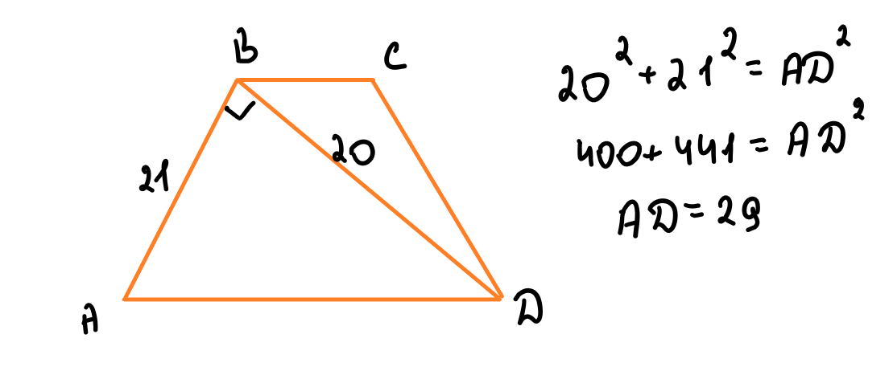
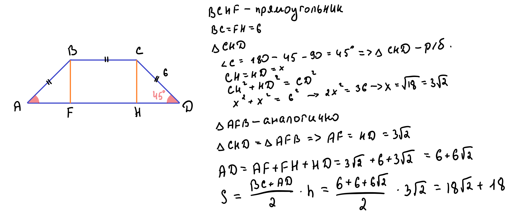
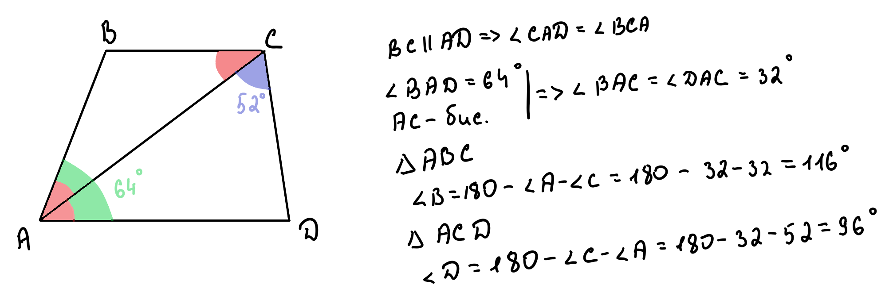
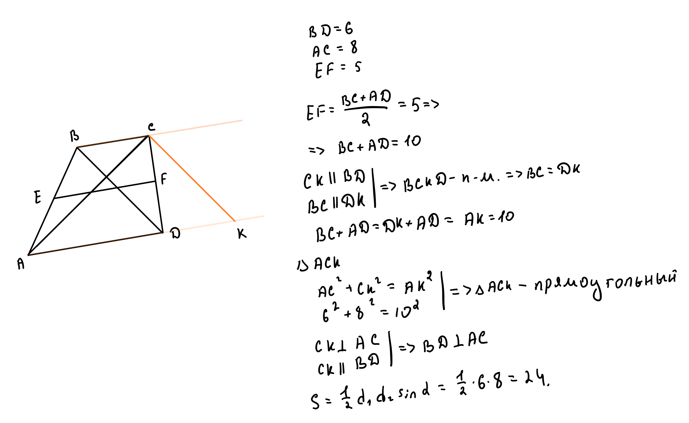

Свойства, виды и методы решения задач
Рисунок 1 - разновидности трапеций
Рисунок 2 - площадь трапеции через высоту
где a и b - основания, h - высота
Рисунок 3 - средняя линия трапеции
Средняя линия параллельна основаниям и равна их полусумме:
Площадь можно выразить через среднюю линию:
Пример 1. Средняя линия трапеции равна 14, большее основание равно 42. Чему равно меньшее основание?
1. Запишем формулу средней линии:
2. Подставим известные значения:
3. Решим уравнение:
4. Анализ результата:
Длина основания не может быть отрицательной! Такой трапеции не существует.
Пример 2. Диагональ BD трапеции ABCD перпендикулярна AB (AB=21, BD=20). Найти большее основание.
Рисунок 4 - решение задачи 2
1. Треугольник ABD - прямоугольный (по условию).
2. По теореме Пифагора найдем AD:
Ответ: Большее основание равно 29.
Пример 3. В равнобедренной трапеции меньшее основание и боковая сторона равны 6, угол при основании 45°. Найти большее основание и площадь.
Рисунок 5 - решение задачи 3
1. Проведем две высоты BF и CH:
Образовались два равных прямоугольных треугольника ABF и DCH.
2. В треугольнике ABF:
3. По теореме Пифагора:
4. Большее основание:
5. Площадь трапеции:
Ответ: Большее основание 6 + 6√2, площадь 18(√2 + 1).
Пример 4. В трапеции ABCD угол A=64°, биссектриса угла A пересекает BC в точке C, угол ACD=52°. Найти углы ADC и ABC.
Рисунок 6 - решение задачи 4
1. Биссектриса делит угол A пополам:
2. В треугольнике ACD:
3. Углы при боковых сторонах трапеции в сумме дают 180°:
Ответ: ∠ADC = 96°, ∠ABC = 116°.
Пример 5*. Диагонали трапеции 6 и 8, средняя линия 5. Найти площадь.
Рисунок 7 - решение задачи 5
1. Перенесем диагональ BD параллельно в точку C, получим отрезок CK=6.
2. Четырехугольник BCKD - параллелограмм (по построению), поэтому DK=BC.
3. Средняя линия:
4. Отрезок AK = AD + DK = AD + BC = 10.
5. Треугольник ACK со сторонами 6, 8, 10 - прямоугольный (6² + 8² = 10²).
6. Значит, диагонали трапеции перпендикулярны.
7. Площадь трапеции через диагонали:
Ответ: Площадь трапеции равна 24.